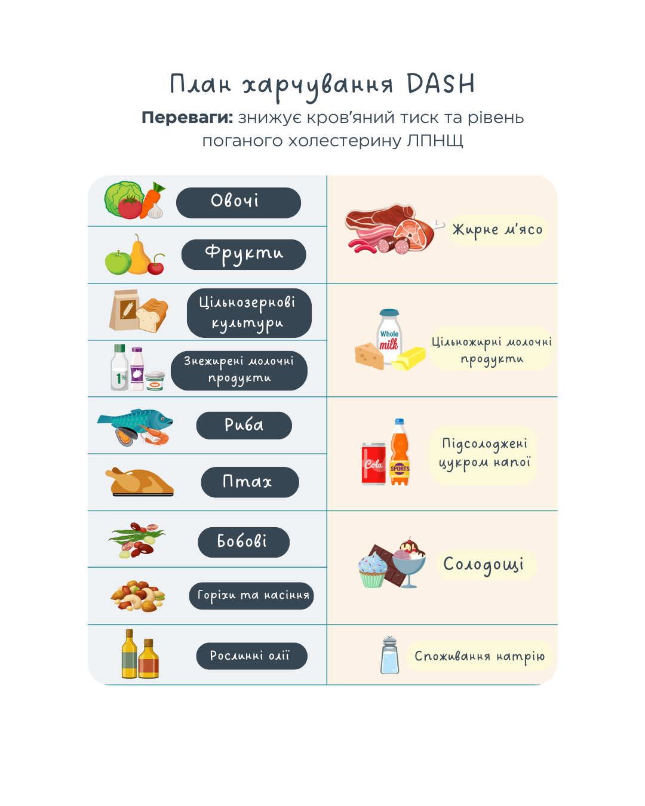
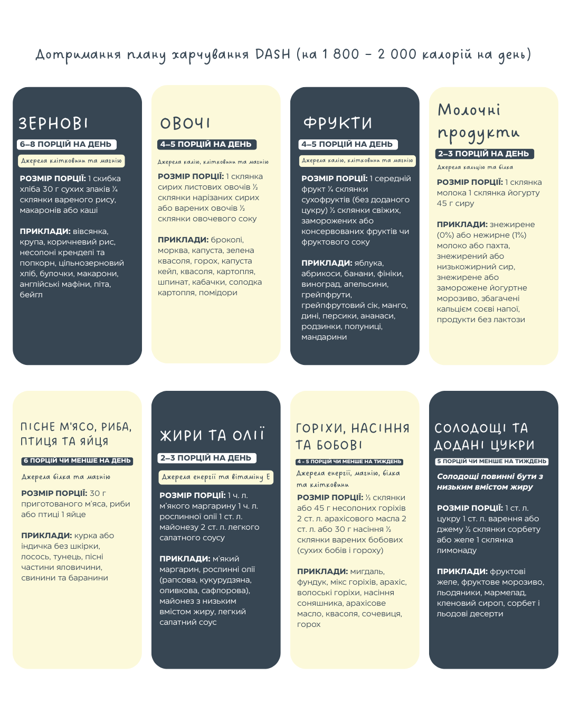

DASH дієта (Dietary Approaches to Stop Hypertension)
DASH дієта (або дієта при гіпертонії) — дотримання дієти в стилі DASH може захистити від виникнення високого кров'яного тиску. Ризик розвитку гіпертонії знижується на 19% у тих, хто дотримується дієти на високому рівні (сумлінно), у порівнянні з тими, хто дотримується її на низькому рівні.
Основні принципи дієти DASH:
- Дієта DASH : передбачає обмеження солі : менше 1 чайної ложки на добу.
- Збільшення споживання продуктів, багатих на калій, магній та кальцій: ці мінерали важливі для контролю тиску.
- Збільшення споживання клітковини: Клітковина допомагає регулювати рівень цукру в крові та знижувати рівень холестерину.
- Обмеження насичених жирів та холестерину: Рекомендується уникати жирного м'яса, жирних молочних продуктів та продуктів з
високим вмістом холестерину.
- Споживання великої кількості фруктів, овочів, цільнозернових продуктів, нежирних молочних продуктів, риби та птиці: Ці продукти є основними джерелами поживних речовин у дієті DASH.
Кому підходить дієта DASH?
- Людям, які страждають на гіпертонію (високий кров'яний тиск).
- Людям, які мають ризик розвитку серцево-судинних захворювань.
- Людям, які хочуть покращити загальний стан здоров'я та підтримувати здорову вагу.
- Людям, які хочуть перейти на здорове харчування.
Ефекти дієти DASH:
- Зниження артеріального тиску.
- Зниження ризику серцево-судинних захворювань.
- Зниження рівня холестерину.
- Сприяння зниженню ваги.
- Покращення загального стану здоров'я.

Приклади щоденних і щотижневих порцій, які відповідають цілям харчування DASH для дієти на 1800–2000 калорій на день. Кількість порцій залежить від вашої добової калорійності.

Кількість порцій, яку ви повинні споживати щодня, залежить від вашої добової калорійності.